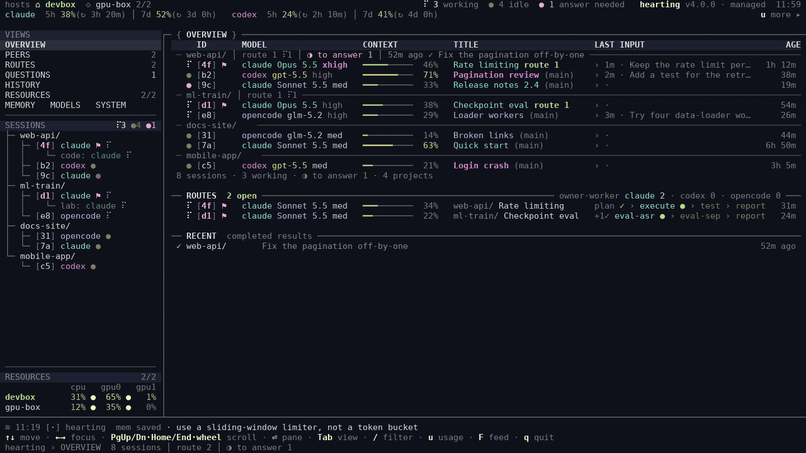
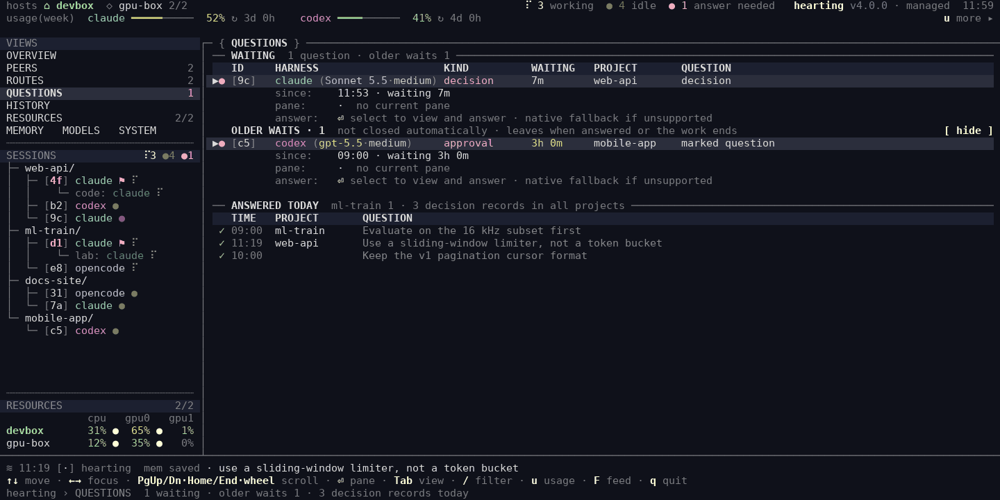

Keep your coding agents on your intent.
Agents differ in skill and cost, and you can no longer work without them. Hearting makes the work follow what you asked, whichever agent runs it. A capable model settles the intent and the plan. Lower-cost workers carry it out in small, checked steps. Fleet shows every one of them, live, on one screen.
curl -fsSL https://github.com/dmlguq456/hearting/releases/latest/download/install.sh | sh
Linux and macOS · checksummed release · release notes · what you need first

The work stays tied to what you asked, not to how capable the agent is.
Agents differ by vendor, by model, and by what your workplace gives you, and working without them is no longer an option. Hearting keeps the way you work the same across them. You stay in charge, and the work holds together even when the agent contributes little on its own.
Consistent work, whatever the agent
Hearting confirms your intent with you before work starts, keeps each worker inside a bounded scope, and checks results independently.
One way of working everywhere
The same requests, stages, artifacts, and memory on Claude Code, Codex, and OpenCode — one of them or all three. Fleet watches all of them in one view.
A crutch for low-cost agents
Hearting cannot make a weak model smarter. It lets one carry out your intent anyway: a capable model settles the intent and the plan (the frame), and cheaper workers carry it out in small, checked steps (dispatch).
Light on the agent
No step works only if an agent memorizes a long procedure. The procedure lives in the harness.
Existing work first
Before planning, a cheap read-only scan lists what your code, earlier artifacts, memory, and git history already settled, so the plan starts from that instead of from what the model happens to know.
Say what you want. The harness does the routing.
Describe the outcome in your own words. There are no command names to learn.
You ask
“Implement and test the login API, then leave a change report.”
Prior-art scan
What the project already has: code, artifacts, memory, git history.
Frame
A capable model proposes the route. You are asked only when there is a real choice.
Owner and workers
One session keeps your request. Lower-cost workers plan, execute, test, and review in small steps; only execute edits source.
Report
What changed, what was verified, what is left, and what it cost.
Small things stay small
A tiny reversible fix is made right in your folder and recorded automatically. Nothing to start or finish.
A small change gets the frame and one quick worker. Bigger or riskier work adds a written plan, independent reviews, and finally adversarial or security checks.
Each stage uses a model budget chosen for it — deep for hard
judgment, light for planned execution. You decide which real model each budget uses.
When agents work in the background, you shouldn’t have to guess.
Is it still running? Is it stuck? Is it waiting for you? Did it finish? Fleet answers in one terminal view, for every Claude Code, Codex, and OpenCode session on your machine and every worker Hearting dispatched from them.

What is running
Every session by project, with what it is doing now and its request’s stage line. ROUTES →
What went quiet
A stalled worker shows as a stalled worker, not as a parent session that went quiet. How →
What needs you
Who asks, about what, for which request, and since when. Older waits stay until answered. QUESTIONS →
?
Watching changes nothing
Four steps from install to a watched task.
You need Linux or macOS, Python 3.11+ with PyYAML, Git, curl or
wget, and at least one signed-in agent CLI. Claude Code alone is enough.
Install
One line, no clone. For Claude Code only, end it with sh -s -- --runtime claude.
curl -fsSL https://github.com/dmlguq456/hearting/releases/latest/download/install.sh | sh
Check
The doctor reports what is live and names any optional piece that is missing.
~/.local/bin/hearting runtime doctor \ --runtime all --strict
Ask
Open your agent CLI inside a Git project and ask for something small, such as fixing a typo and running the existing test.
Watch
Run Fleet in a second terminal to see the session and any workers it dispatches.
fleet
How it is built, from your sentence down to upkeep.
Seven layers sit between what you say and the work that gets done. Open one to see its parts. Memory runs alongside all of them, and Fleet watches all of them.
Memory
SQLITE · FTSone sentence in
Intent card and route
standard — multi-file, needs independent verificationCapability, intensity, stages, write scopes, and model budgets are fixed for the request.
Bigger or riskier work adds a plan, independent reviews, and adversarial checks.
Pipelines
Dispatch
Model budget per stage
Shared contracts name roles and budgets, never a vendor model. You decide which real model each budget uses.